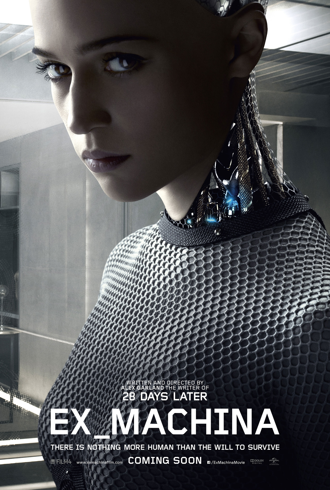

foo@bar.com Logout
Foo Bar루시 (Lucy)
2014, 뤽 베송
평범한 삶을 살던 여자 루시(스칼렛 요한슨)는 어느 날 지하세계에서 극악무도하기로 유명한 미스터 장(최민식)에게 납치되어, 몸 속에 강력한 합성 약물을 넣은 채 강제로 운반하게 된다. 다른 운반책들과 같이 끌려가던 루시는 갑작스런 외부의 충격으로 인해 몸 속 약물이 체내로 퍼지게 되면서, 그녀 안의 모든 감각이 깨어나기 시작하는데…

엑스 마키나(Ex Machina)
2015, 알렉스 갈린드
유능한 프로그래머 ‘칼렙’(돔놀 글리슨)은 치열한 경쟁 끝에 인공지능 분야의 천재 개발자 ‘네이든’(오스카 아이삭)의 새로운 프로젝트에 참여하게 된다. 외부엔 알려지지 않은 그의 비밀 연구소로 초대받은 ‘칼렙’은 그 곳에서 네이든이 창조한 매혹적인 A.I. ‘에이바’(알리시아 비칸데르)를 만나게 된다. 그녀의 인격과 감정이 진짜인지 아니면 프로그래밍 된 것인 지를 밝히는 테스트를 진행하지만. 점점 에이바도 그녀의 창조자 네이든도 그리고 자신의 존재조차 믿을 수 없게 되고 모든 것을 의심하게 되는데…
트랜센던스 (Transcendence)
2014, 윌리 피스터
인류가 수억 년에 걸쳐 이룬 지적능력을 초월하고 자각능력까지 가진 슈퍼컴 ‘트랜센던스’의 완성을 목전에 둔 천재 과학자 ‘윌’(조니 뎁)은 기술의 발전은 인류의 멸망이라 주장하는 반(反) 과학단체 ‘RIFT’의 공격을 당해 목숨을 잃는다. 연인 ‘에블린’(레베카 홀)은 윌의 뇌를 컴퓨터에 업로드 시켜 그를 살리는데 성공하지만, 또 다른 힘을 얻은 그는 온라인에 접속해 자신의 영역을 전 세계로 넓혀가기 시작하는데…